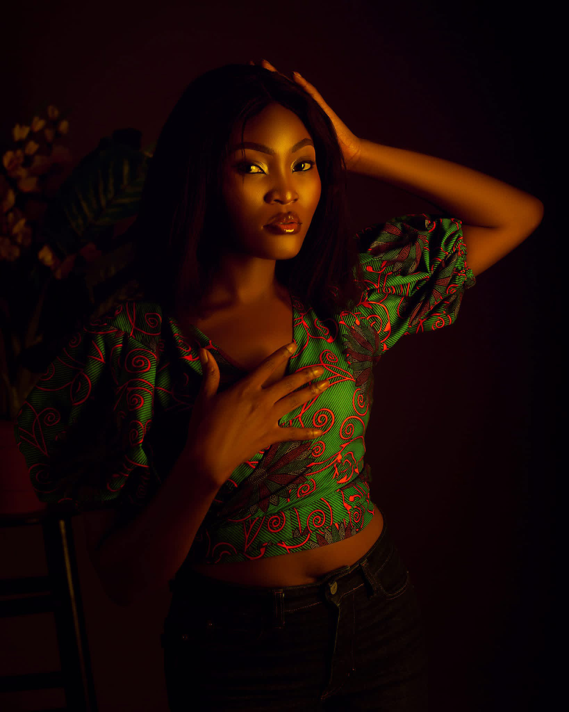
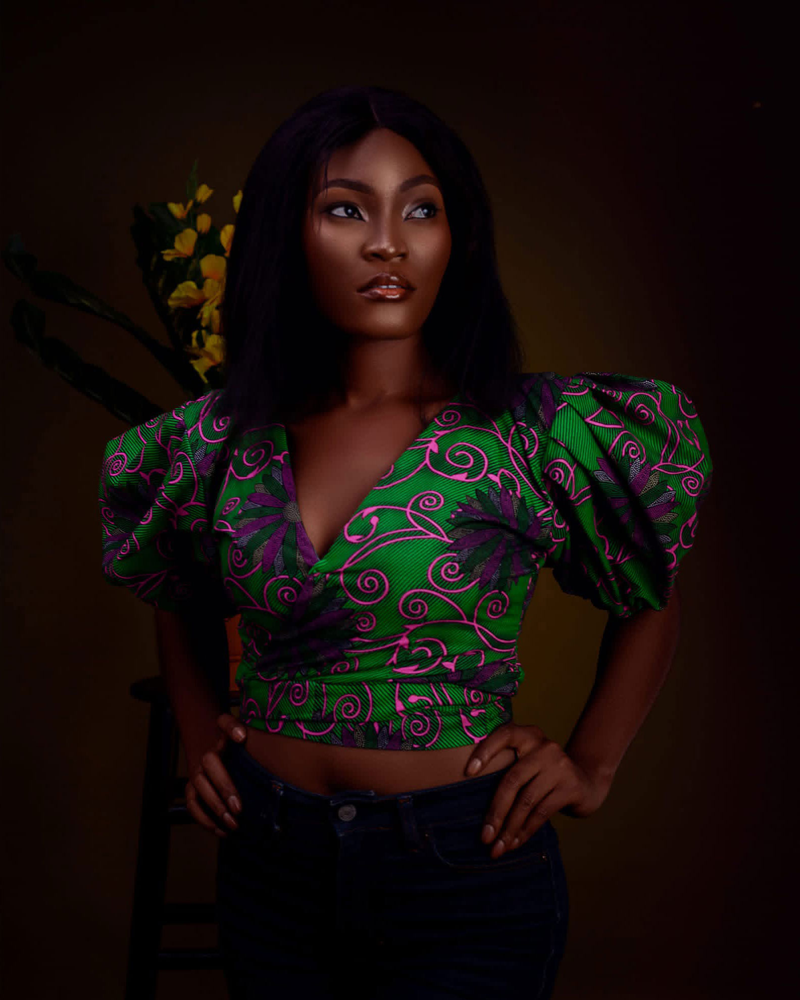

BEHIND THE LENS
Roselyn Abaa-Offor
Photographer & Visual Storyteller
Based in Lagos, Nigeria and available worldwide — creating a calm, intentional space where every subject feels seen.

“I believe every person carries a story worth telling. My work is about creating a space where you feel seen — and then freezing that moment in time.”
Roselyn Abaa-Offor is a passionate photographer and visual storyteller based in Lagos, Nigeria and available worldwide, dedicated to capturing moments with depth, emotion, and authenticity. Her work is rooted in the belief that every image should tell a story—one that feels real, timeless, and deeply human.
With a strong background in leadership and organization, Roselyn brings a unique blend of structure and creativity to her photography. She approaches every shoot with intention, paying close attention to detail, lighting, and composition while ensuring her clients feel comfortable, confident, and genuinely seen in front of the lens.
Whether documenting intimate portraits, maternity milestones, traditional weddings, fashion editorials, dynamic events, or family celebrations, Roselyn is known for creating a warm, unhurried environment that allows her subjects to be themselves—resulting in natural, powerful imagery that resonates across generations.
Driven by a desire to continuously evolve, she is committed to refining her craft and delivering work that not only meets expectations but leaves a lasting emotional impression.
- Photographer
- Roselyn Abaa-Offor
- Location & Reach
- Lagos, Nigeria · Available Worldwide
- Photography Disciplines
- Portraits · Maternity · Weddings · Fashion · Family · Events · Videography
- Booking Status
- Open for Bookings

THE KAMEVA APPROACH
“Capturing the quiet moments, the raw emotion, and the beauty that lives between frames.”
From quiet studio studies in Lagos to celebratory family and wedding commissions worldwide, every frame is guided by empathy, flattering light, and honest human connection.
Roselyn Abaa-Offor · Kameva Photography
WORK TOGETHER
Open for Commissions in Lagos & Worldwide
Whether you are celebrating a personal milestone, expecting new life, planning a wedding, or launching a fashion collection, Roselyn works closely with you from creative direction through final retouched delivery.
